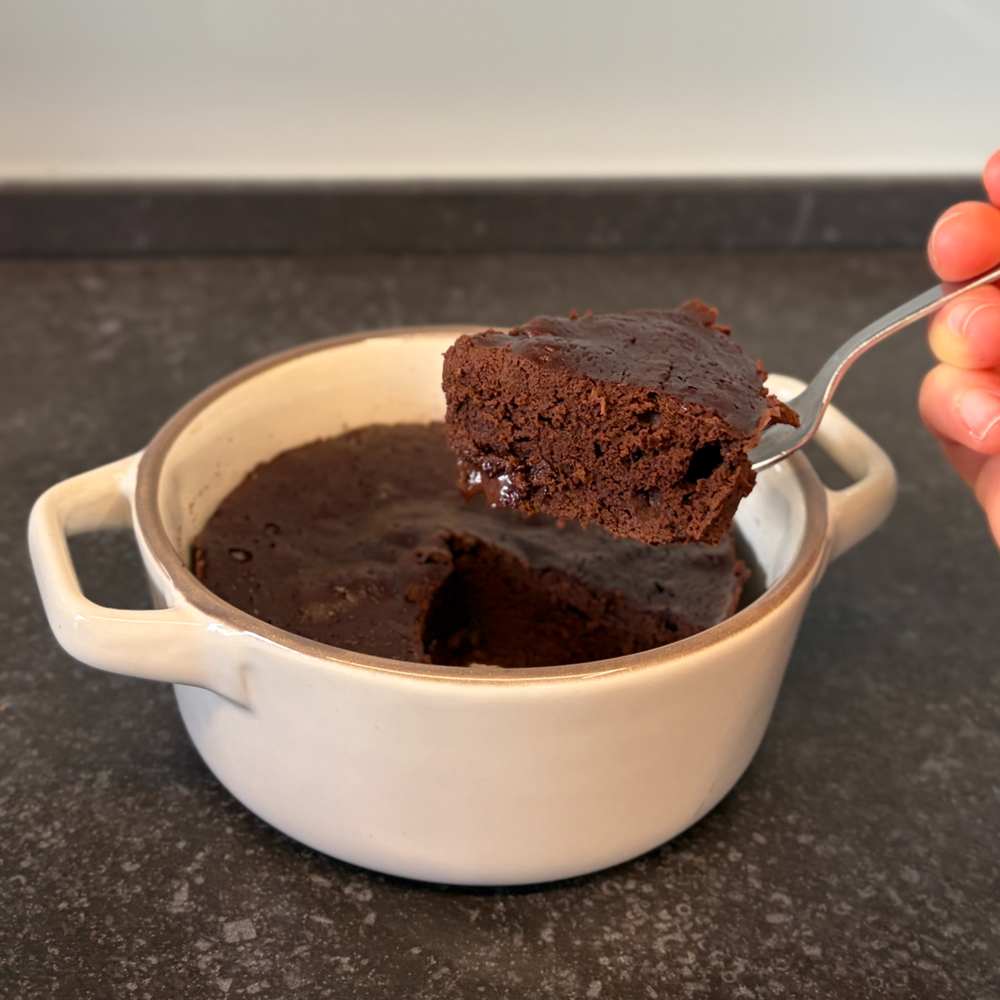

עוגת שוקולד אישית במיקרו
טבלת ערכים תזונתיים בקירוב:
שימו לב שזו טבלה עבור ממתיק סוויטאנגו וקובית שוקולד 84% ללא סוכר (השוקולד עם 17 גרם פחמימה ו-501 קלוריות ל100).
| ערכים | קערה (115 גרם) | 100 גרם |
|---|---|---|
| קלוריות | 197 | 171.2 |
| פחמימות | 4.3 | 3.7 |
| חלבונים | 14.6 | 12.6 |
האמת שזה לא מתכון מתכון שלי בכלל, המתכון הזה רץ בכל הרשת כבר תקופה בכל מיני גרסאות – פעם עם קוטג', פעם עם יוגורט, לפעמים עם קמח שקדים ובלי. ניסיתי אותו בעצמי פעמים רבות והחלטתי להנגיש לכם את הגרסה הכי מוצלחת שאני הגעתי אליה.
ניסתי את כל האפשרויות כדי שתקבלו קינוח עם הערכים הכי טובים שיש – דל בקלוריות ופחמימות, עשיר בחלבון ועם הכי פחות מרכיבים וזמן הכנה.
גיליתי למשל שהקוטג' דורש טחינה והיוגורט מוסיף חמיצות שלא תמיד מתאימה, ובזכות כמות הקקאו הגבוהה אפשר לוותר על קמח השקדים ולחסוך המון קלוריות בלי לפגוע בטעם. אז אולי זה לא מתכון מקורי, אבל עשיתי הכל כדי שתקבלו את הגירסה הכי פשוטה, בריאה וטעימה. תהנו!

המתכון:
כמות: קערה אישית - 115 גרם
מרכיבים:
1 ביצה L
2 כפות שטוחות של גבינה לבנה (35 גרם)
2 כפות גדושות של אבקת קקאו (16 גרם)
2 כפות סוויטאנו או דבש (20 גרם)
(שימו לב: דבש אינו מתאים לסוכרתיים ולקיטוגנים)
אופציונלי- קובית שוקולד מריר (5 גרם)
אני השתמשתי ב-84% ללא סוכר
תוספות אפשריות :
ממולץ לבחור באחת ולא שילוב
1 כפית תמצית וניל
גרידת תפוז
מעט מלח
אבקת קפה נמס
הוראות הכנה:
ערבבו את כל המרכיבים בקערה (חוץ מקובית השוקולד).
שפכו את התערובת לקערה חסינה לחום ושימו את קוביית השוקולד במרכז וכסו אותה עם בלילה.
חמו במיקרוגל במשך 2:00-2:30 דקות עד שהעוגה אפויה היטב גם מבפנים.
הערות:
המתכון מכיל כמות יפה של קקאו, אם אתם רוצים מדריך קצר להבדלים בין האבקות קקאו השונות, הסבר בכתבה הבאה:
האם הייתם רוצים להשתמש באבקת קקאו שהיא גם בריאה
ניתן להכין את המתכון גם בתנור. חממו תנור ל180 מעלות טרובות ותאפו למשך כ-25 דקות.